The dependency graph
Start at the assignment, move backward to its prerequisite definitions, and then return to the implementation. The arrows below indicate prerequisites, not an official deadline schedule.

View Mermaid source
flowchart TD
accTitle: Concepts leading to the four homework assignments
accDescr: Induction and OCaml lead to HW1, environments and closures to HW2, stores and records to HW3, and typing and unification to HW4.
I["Inductive definitions<br/>Constructors and structural recursion"] --> O["OCaml<br/>Patterns and higher-order functions"]
O --> H1["HW1<br/>15 functional-programming exercises"]
H1 --> E["Semantic rules<br/>Environments and closures"]
E --> H2["HW2<br/>ML− interpreter"]
H2 --> S["State<br/>Locations, stores, and records"]
S --> H3["HW3<br/>B interpreter"]
E --> T["Typing rules<br/>Constraints and unification"]
T --> H4["HW4<br/>ML− type checker"]
H2 -. "same AST, different meaning" .-> H4
Every HW1 problem
| Problem | Definition you need | Companion route | Official specification |
|---|---|---|---|
P1 prime |
Decreasing numeric search; primality domain | P1 guide, recursion | HW1 p. 1 |
P2 range |
Base case and ordered list construction | P2 guide | p. 1 |
P3 suml |
Nested structural recursion; fold identity | P3 guide | p. 1 |
P4 drop |
Polymorphism; two stopping conditions | P4 guide | p. 1 |
P5 max, min |
Reduction over a nonempty list | P5 guide | p. 2 |
P6 sigma |
Higher-order function; interval recursion | P6 guide | p. 2 |
P7 forall |
Predicate; conjunction identity | P7 guide | p. 2 |
P8 double |
Function composition; currying | P8 guide | pp. 2–3 |
P9 mem |
Tree traversal without ordering assumptions | P9 guide | p. 3 |
P10 mirror |
Constructor-preserving transformation | P10 guide | pp. 3–4 |
P11 natadd, natmul |
Inductive numbers; structural recursion | P11 guide | p. 4 |
P12 eval |
Mutually recursive syntax and semantics | P12 guide | pp. 4–5 |
P13 diff |
AST transformation; generalized product rule | P13 guide | p. 5 |
P14 calculator |
Interpretation with a binding for X | P14 guide | pp. 5–6 |
P15 check |
Free variables; lexical scope | P15 guide | p. 6 |
The three larger assignments
| Assignment feature | Definition → representation | Learn it here | Primary rule source |
|---|---|---|---|
HW2 variables and LET |
Runtime environment → name/value list | Expressions | HW2 pp. 2–3 |
HW2 PROC and CALL |
Closure → parameter, body, captured environment | Closures | HW2 p. 3 |
HW2 LETREC, LETMREC |
Recreate self and peer bindings at call time | Recursive scope | HW2 pp. 3–5 |
| HW2 list operations | Tagged list values; partial head/tail | HW2 guide | HW2 p. 3 |
| HW3 mutation and loops | Store → location/value map; return updated memory | State | HW3 pp. 2–3 |
| HW3 calls | Fresh locations versus shared locations | Parameter passing | HW3 p. 4 |
| HW3 records | Field name → location; possible shared cells | Records | HW3 pp. 2–3 |
HW4 typeof |
Type environment → constraints → substitution | Inference | HW4 p. 2, lecture 17 p. 26 |
Recognize a misconception from a failing test
| Symptom | Likely mistaken model | Revisit |
|---|---|---|
| A function sees the caller’s newer x | Body uses caller environment | Lexical scope |
| A mutation disappears after a sequence | An earlier memory is reused | Store threading |
| Call by value changes a scalar caller variable | Parameter reused the caller’s location | Calls |
| Updating one record changes another | Shared field locations; possibly correct behavior | Aliasing |
x x gives an endlessly expanding type |
Missing occurs check | Unification |
| A free variable is accepted because its name occurs elsewhere | A global set replaced a lexical path | Scope contexts |
Before considering an assignment finished
For every constructor, identify its source rule, input context, recursive premises, output, side conditions, and one negative test. The HW2, HW3, and HW4 guides give constructor-family checklists for this review. A successful sample execution is evidence for one case, not a proof that all constructors implement the intended language.